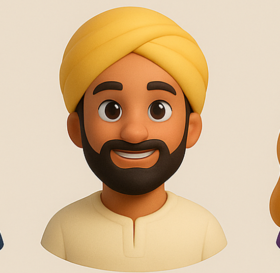

Total Remaining Balance: ₹0.00
Investment
0%
Manual Expenses
0%
Loan/EMI
0%
Log Transaction
Monthly Income & Expenses
Income
₹0.00
Total Expenses
₹0.00
Expense Funds
Loan & EMI Funds
Daily Expense Funds
Investment Funds
Fund Transfer
How was my day? 🔽
Daywise Expenses 🔽
Transaction History 🔽
| Date | Description | Amount | Type |
|---|
Expense Distribution
Statement Download
OR
Settings
🌞 Light Mode
🌙 Dark Mode
This helps display dates and times correctly. Your browser's current timezone is a good default.
Note: For 'Scan & Pay', your OS will choose the app for UPI links.
Budget Mode
Switching modes will involve data handling choices.
User Authentication & Profile
Not logged in
👁️
Profile Customization
Guest

Frequently Asked Questions 🔽
About the App
© 2025-2026 DaikuFi Project. All Rights Reserved.
DaikuFi helps you track your monthly income and expenses efficiently. Manage various funds, log transactions, and visualize your spending with ease.
Version: 1.0.0
Data Management
What is an "Expense Fund"? ▼
Think of Expense Funds as digital envelopes for different spending categories. You create them to keep track of how much you're spending on specific things. For example, you could create an "Expense Fund" for "Groceries," another for "Utilities," one for "Entertainment," and so on. This helps you see exactly where your money is going each month. You can create these from the Dashboard using the "+" floating action button.
What is an "Investment Fund"? ▼
Investment Funds are designed to help you track money you're setting aside for growth or future goals. This could be for savings accounts, stocks, mutual funds, or any other type of investment. When you add money to an "Investment Fund," it helps you see how much you're actively putting towards building your wealth. Like Expense Funds, you can create these using the "+" button on the Dashboard.
How does "Auto-Deduct" work? ▼
"Auto-Deduct" is a feature for funds that have fixed, recurring payments, like loan EMIs or monthly subscriptions (e.g., streaming services, gym memberships).
- When you create a fund (using the "+" button on the Dashboard), you can mark it as "Auto-Deduct" and specify the amount.
- When a new month begins in the app (either by you navigating to it or when the app automatically processes it on the 1st), this amount is considered automatically spent from that fund.
- You can also set a "Due Day" (e.g., 5th, 15th) for these funds. This is mainly for your information and for DaikuFi to give you timely notifications about upcoming payments.
- This helps ensure these regular, fixed expenses are always accounted for in your budget without you having to log them manually each time.
How do I revert a transaction? ▼
Made a mistake? No problem! On the Dashboard, in the "Log New Transaction" card (you might need to tap the "Log New Transaction" button to show it), you'll find a "Revert Last Transaction" button. Clicking this will undo the very last expense you logged or the last fund transfer you made. The app will ask for confirmation before proceeding. This is handy for quick corrections.
Can I change my currency? ▼
Yes, absolutely! You can personalize DaikuFi to use your preferred currency.
- Go to the "Settings" section using the bottom navigation bar.
- Look for the "Currency" option.
- Tap on the dropdown menu (it shows options like ₹ INR, $ USD, € EUR) and select the one you want.
What is "Daiko" the AI assistant? ▼
Daiko is your smart, friendly, in-app AI assistant, here to make managing your finances easier! You can find the chatbot icon (🤖) on the bottom right of your screen.
- Chat with Daiko: You can type messages or, if you grant microphone permission (via the 🎤 icon in chat), talk to Daiko using voice commands.
- What Daiko Can Do: Daiko can help you with various tasks like:
- Setting or updating your monthly income (e.g., "Set income to 50000").
- Creating new expense or investment funds (e.g., "Create a fund for Groceries").
- Logging your expenses (e.g., "Log 500 for Coffee").
- Checking your current balance or details for a specific fund.
- Even searching Wikipedia for general knowledge questions (e.g., "What is inflation?").
- How Daiko Understands: Daiko uses a combination of programmed logic to understand your commands and sentiment analysis (from the ml5.js library) to get a feel for your messages.
How do "Daiko's Financial Insights" work? ▼
"Daiko's Financial Insights" provide you with personalized observations and suggestions about your finances for the current month. You can access these by tapping the lightbulb icon (💡), which appears as a floating button on the Dashboard, History, and Analytics screens.
- What it does: Daiko looks at your set income, your spending patterns across different funds, and how much you've allocated to savings or investments for the current month you are viewing.
- Personalized Tips: Based on this analysis, Daiko might:
- Alert you if a fund is running low.
- Point out if your spending in a category is high compared to your income.
- Suggest how common budgeting rules (like the 50/30/20 rule for Needs/Wants/Savings) might apply to your specific financial situation, and show how your current spending aligns.
- Provide reminders for upcoming EMI due dates if you've set them for your "Auto-Deduct" funds.
What's the difference between "Individual Planner" and "Shared Planner" modes? ▼
DaikuFi offers two distinct modes to manage your budget, which you can choose in "Settings" under the "Budget Mode" section:
- Individual Planner (Offline, Local Data):
- All your financial data (income, funds, transactions, history) is stored directly on your device within your browser's local storage.
- Pros: It's completely private to your device, and you can use it even without an internet connection.
- Cons: If you clear your browser data or lose access to your device, your DaikuFi data will be lost unless you've backed it up manually (e.g., by downloading PDF statements).
- Shared Planner (Online Sync with Login):
- This mode requires you to create an account and log in using your email and password (this is powered by Firebase Authentication).
- Your financial data is securely stored in the cloud using Firebase Firestore.
- Pros: You can access your budget from multiple devices simply by logging in. Your data is also backed up in the cloud.
- Cons: Requires an internet connection for data to sync and for login.
How do I switch between "Individual" and "Shared" modes? ▼
You can switch between "Individual Planner" and "Shared Planner" modes from the "Settings" screen:
- Go to "Settings" using the bottom navigation bar.
- Find the "Budget Mode" section. You'll see radio buttons for "Individual Planner" and "Shared Planner".
- Select the mode you want to switch to by tapping on it.
- Switching from Individual to Shared:
- The app will first save your choice of "Shared Planner" mode.
- If you are not already logged in, it will prompt you to log in or sign up for a Shared Planner account using email and password.
- After you successfully log in, DaikuFi will ask if you want to upload your existing local data (from your Individual Planner) to this new shared online budget. You can choose to merge it (local data usually takes precedence for common items) or start fresh with the online budget.
- Switching from Shared to Individual:
- If you are logged into a Shared Planner account, the app will inform you that a logout is required.
- During the logout process (initiated by you via the "Logout" button), DaikuFi will ask if you want to copy your current shared budget data to your device for local, offline use in the Individual Planner mode. You can choose to overwrite any existing local data with this shared data, or stick with what was previously stored locally on that device.
- Once logged out and data choice is made, the app will operate in Individual mode using local storage.
How does "Scan & Pay (QR)" work for logging transactions? ▼
The "Scan & Pay (QR)" feature helps you quickly log expenses made via UPI QR codes. Here's a step-by-step guide:
- Go to the "Dashboard" tab.
- Tap the "Log New Transaction" button to expand the logging section.
- Select the fund you're paying from (e.g., "Groceries") and enter the amount of the transaction.
- Choose the "Scan & Pay (QR)" payment method option.
- A QR scanner modal will pop up. The app will request permission to use your device's camera if it hasn't been granted already.
- Point your camera at the UPI QR code. The app uses a built-in scanner (from the HTML5-QRCode library) to read the QR code.
- Once successfully scanned, DaikuFi logs this transaction against the selected fund and amount in its history. It may then attempt to open the UPI payment link using your phone's default app for handling UPI payments, allowing you to complete the payment.
- Alternative for Images: If you have a QR code saved as an image on your device, you can tap the "Upload QR Image" button within the scanner modal to select and scan it.
How does the "Pay via App" option work? ▼
The "Pay via App" option streamlines logging a UPI transaction within DaikuFi and then making the actual payment using one of your installed UPI apps. Here's how it works:
- On the "Dashboard", find the "Log New Transaction" section (tap the button to expand it if needed).
- Select the fund you wish to pay from and enter the transaction amount.
- Choose "Pay via App" as your payment method.
- When you tap the "Log Expense" button:
- DaikuFi first records this transaction in your app's history for the selected fund.
- Then, it attempts to automatically open the default UPI payment app you've selected in DaikuFi's "Settings" (e.g., GPay, PhonePe, AmazonPay as listed in `paymentAppUrls` and selectable via `defaultPaymentAppSelect`).
- You would then complete the actual payment details and confirm within your chosen UPI app.
How do I download a financial statement? ▼
DaikuFi allows you to download a PDF summary of your financial activities, which is great for record-keeping or review.
- Navigate to the "Analytics" section using the bottom navigation bar.
- Under the "Statement Download" heading, you'll find two options:
- Download Statement (Date Range): Use the "Start Date" and "End Date" pickers (`pdfStartDate`, `pdfEndDate`) to choose the exact period you want. Then, tap the "Download Statement (Date Range)" button.
- Download Current Month Statement: Simply tap this button to get a statement that covers the entire month you are currently viewing in the app.
Can I customize the app's appearance? ▼
Yes, DaikuFi offers several ways to personalize its look and feel to match your preference!
- Go to the "Settings" section using the bottom navigation bar.
- Theme: You can switch between a "🌞 Light Mode" and a "🌙 Dark Mode" using the toggle switch next to "Theme:". The app will remember your choice for future visits.
- Light Mode Palette: If you're using Light Mode, you can further customize its colors. Look for the "Light Mode Palette" dropdown menu (`lightModePaletteSelect`). You can choose from options such as:
- Default (Lavender Glow)
- Ocean Breeze
- Forest Calm
Why should I set my timezone? ▼
Setting your correct timezone in DaikuFi is important for ensuring all your financial records are accurate and make sense for your location. Here's why:
- Accurate Transaction Timestamps: When you log any income, expense, or transfer, DaikuFi records the exact date and time. If your timezone isn't set correctly (via `timezoneSelect` in Settings), these timestamps might be off, reflecting a different part of the world's time.
- Consistent History: Correct timestamps mean your transaction history, visible in the "History" section, is sorted and displayed chronologically according to your actual local time.
- Reliable Statements: When you download PDF statements from the "Analytics" section, the dates and times on those statements will use your selected timezone, making them accurate for your records.
How can I customize my profile? ▼
You can personalize your DaikuFi profile to make it feel more like your own! Here's how:
- Navigate to the "Settings" section using the bottom navigation bar.
- Scroll down to the "User Authentication & Profile" group. Even if you're using the "Individual Planner" mode, you can customize some parts.
- Under "Profile Customization," you'll find options to:
- Display Name: Enter your preferred name in the "Display Name" field (element `userNameInput`). This name is used in welcome messages on the Dashboard.
- Choose Avatar: Tap on one of the emoji options available in the "Choose Avatar" list (`avatarOptions`). This avatar will appear next to your welcome message and in your profile display within settings.
What kind of notifications will I receive? ▼
DaikuFi provides helpful in-app notifications to keep you informed about important aspects of your budget. You can view these notifications by tapping the bell icon (🔔) located at the top right of the screen.
Currently, DaikuFi can notify you about:
- Due Payment Reminders: If you've created an "Auto-Deduct" fund (like for an EMI or a recurring subscription) and set a specific "Due Day" for it, DaikuFi will generate a notification a few days before this payment is due, helping you remember it. (Handled in `checkAndAddNotifications`)
- Low Fund Balance Alerts: For your manual expense funds, if the remaining balance drops to 50% or even critically to 10% of its initial allocated amount, DaikuFi will send you an alert. This gives you a heads-up so you can adjust your spending or transfer funds if needed. (Handled in `checkAndAddNotifications`)
What are the "How was my day?" and "Daywise Expenses" charts? ▼
These two charts are found in the "History" section and provide visual ways to understand your spending patterns. You can tap on their headers to expand or collapse them:
- How was my day? (Hourly Expense Chart):
- This is a bar chart (`howWasMyDayBarChart`) that shows your total expenses for the current calendar day, broken down by the hour in which each expense occurred.
- It helps you visualize your spending rhythm throughout the day. For example, you might notice higher spending around lunchtime or in the evening after work. (Logic in `getHowWasMyDayExpenseDataForChart` and `renderHowWasMyDayChart`)
- Daywise Expenses (Daily Expense Chart):
- This bar chart (`dailyBarChart`) displays your total expenses for each individual day of the currently selected month in the app (e.g., June 1st, June 2nd, etc.).
- It allows you to see which days of the month you typically spend more or less, helping you identify trends like higher weekend spending or patterns related to bill payments. (Logic in `getDailyExpenseDataForChart` and `renderDailyBarChart`)
🔔
0
No new notifications.
Budget Bot
Hello! I'm your DaikuFi bot. You can call me Daiko! How can I assist you today? Try asking about your 'balance' or how to 'add a fund'.
Enable Voice
Create New Fund
Fund Type:
Edit Fund
Fund Type:
Scan UPI QR Code
Initializing QR Scanner...
Daiko's Financial Insights
Let me take a look at your finances...